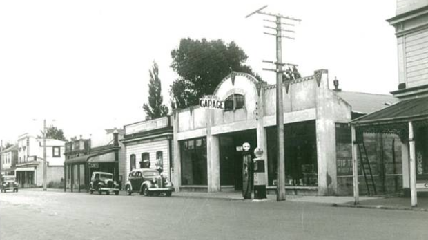
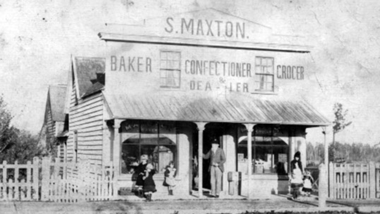

Township 15 km north-east of Featherston on the Waiohine River terraces, with a 2020 population of 2,420. Crammed with cafés, boutiques, homestays, hotels, and antique shops, Greytown has become Wairarapa’s wealthiest and most fashionable town. It is also the oldest, with New Zealand’s most complete main street of wooden Victorian buildings.
Greytown remains an important rural servicing centre, with light engineering, pip-fruit and timber processing industries.
Greytown was founded in 1854 by the Small Farms Association, which aimed to settle working people in towns and on the land. The town was named after Governor Sir George Grey. It was New Zealand’s first planned inland town, although the first settlers were greeted by dense bush. Once this was cleared, the town developed as a market and servicing centre. It was soon the region’s largest settlement, and became a borough in 1878.
However, the railway bypassed Greytown in the 1870s because of problems with floods from the Waiohine River. The town never recovered its former prominence. One benefit of the flooding was rich alluvial soils, and a pip-fruit, berry, and market garden industry was established in the 1890s.
Greytown declined during the 20th century, but was rediscovered in the 1990s. Many Wellingtonians and others were charmed by its old buildings and settled or bought second homes in the town, initiating a new period of growth.